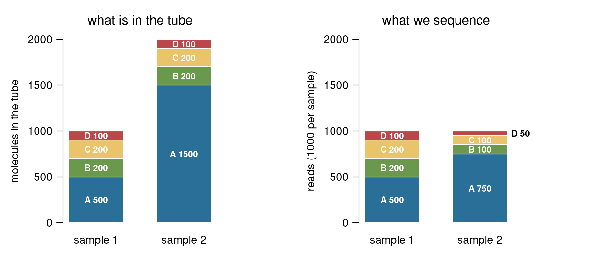
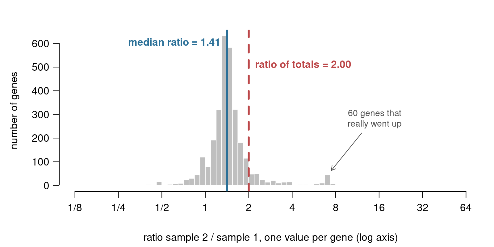
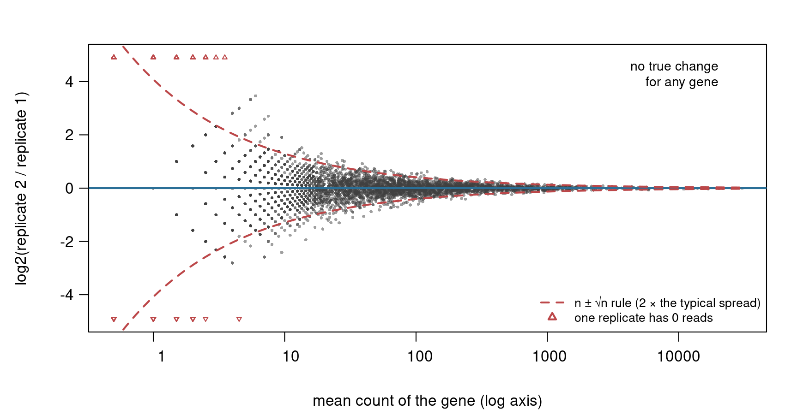
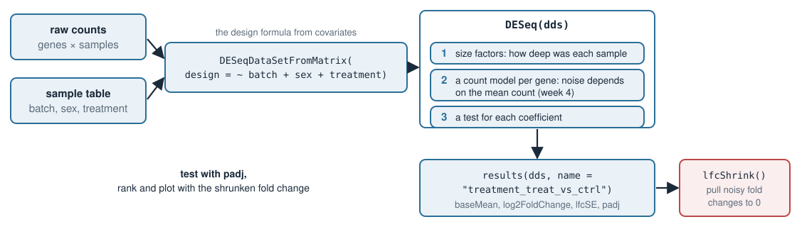
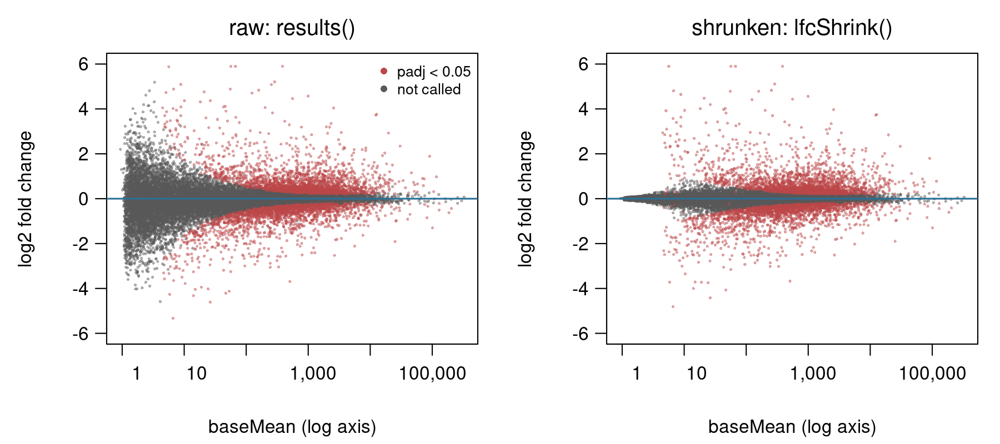
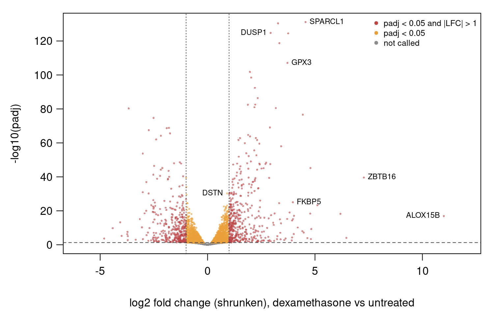

In Design matrices in R: limma we started from log2 values. Today we start one step earlier, from the table of raw counts (genes × samples), and run the standard tool for it, DESeq2. The design formula is the same as before. Three ideas are new:
RNA-seq is counting. A read count is a random draw; what we want per gene is its fraction of the RNA.
Size factors. How deep each sample was sequenced, estimated so that a few big changes cannot fool us (the median of ratios).
Ratios of small counts are noisy. 3 reads versus 0 says much less than 3000 versus 1000. This is why we need a count model and why we shrink fold changes. Both get their maths in week 4.
The library is a bag of RNA fragments. Gene A makes up a fraction p of the bag.
Sequencing draws N fragments at random. Gene A gets about N \cdot p reads, but not exactly: here 6, next time maybe 5 or 8.
So a count says nothing on its own: 512 reads out of 10 million is not the same as 512 out of 40 million. What we want per gene is p, i.e., what fraction of the RNA stems from a particular gene?
A count needs its depth: size factors
Sample 2 is the same RNA as sample 1, sequenced twice as deep:
gene
sample 1
sample 2
fraction 1
fraction 2
A
400
800
0.4
0.4
B
300
600
0.3
0.3
C
200
400
0.2
0.2
D
100
200
0.1
0.1
total
1000
2000
1
1
Raw counts say every gene is “2× up”. Divide by the total and the fractions agree: nothing changed.
The number we divide by is the sample’s size factor. The simplest one is the total read count. Counts per million (CPM) is the same thing, times 10^6.
cpm <-t(t(counts) /colSums(counts)) *1e6# divide each column by its total
The composition trap

Only gene A changed: 3 times more molecules in sample 2. B, C and D are exactly the same in the tube.
After dividing by the total, B, C and D look halved, and A looks only 1.5× up.
The fraction of the RNA is a zero-sum game: if one gene takes more of the reads, all others get fewer. A few very abundant genes that change can fake changes in thousands of others.
Improving sample comparability: the median of ratios
gene
s1
s2
s2 / s1
A
100
210
2.1
B
50
100
2.0
C
40
76
1.9
D
20
160
8.0
E
10
22
2.2
total
220
568
2.58
Median of 1.9, 2.0, 2.1, 2.2, 8.0 is 2.1. Gene D, which really changed, does not move it.
The ratio of totals, 2.58, is pulled up by D.

Simulated, 3000 genes: most genes did not change, so most ratios pile up at the true depth ratio.
DESeq2 compares each sample with a “typical sample” (for each gene, the geometric mean over all samples) and takes the median ratio. Genes with a 0 in any sample are left out: a ratio with 0 is useless.
The main thing to remember: In principle, we just want to get ratios comparable. But DESeq2 does some further math to improve comparability. The size factor takes care of this
Same truth, different ratios
Two replicates: same RNA, same depth. Every difference below is pure counting noise.
gene
expected reads
replicate 1
replicate 2
ratio
big
1000
1012
987
0.98
small
2
0
3
\infty
small
2
1
4
4
small
2
3
0
0
Rule of thumb (from simulation, and next week from a formula): if you expect about n molecules, you get n \pm \sqrt{n}.
expected n
2
100
1000
typical spread \sqrt{n}
1.4
10
32
relative noise \sqrt{n}/n = 1/\sqrt{n}
70%
10%
3%
The fan: counting noise in one picture

An MA plot: log2 fold change against the gene’s mean count. Two replicates, no true change for any of 5000 genes.
Wide at low counts, narrow at high counts. The dashed lines are the n \pm \sqrt{n} rule.
Ranking by fold change picks the low-count genes: the 10 largest fold changes here are all genes with fewer than 15 reads, and all are noise.
A test must know that 3 vs 0 carries less information than 3000 vs 1000. One \sigma for all genes, as in plain least squares, cannot. A count model can (week 4). voom’s weights in covariates-r were a patch for the same problem.
Try it: noise in a ratio of counts
DESeq2 in four calls

library(DESeq2)dds <-DESeqDataSetFromMatrix(countData = counts, colData = samples,design =~ batch + sex + treatment)dds <-DESeq(dds) # size factors -> count model per gene -> testsresultsNames(dds) # "Intercept" "batch_B_vs_A" "sex_M_vs_F" "treatment_treat_vs_ctrl"res <-results(dds, name ="treatment_treat_vs_ctrl")
Input: raw integer counts, not CPM and not logs. DESeq2 does the dividing itself.
The design is the one from covariates. Same X, same rank check: a confounded design stops with “the model matrix is not full rank”.
Reading the results
column
meaning
baseMean
mean of the normalized counts (divided by the size factors) over all samples
log2FoldChange
the treatment coefficient: treat vs ctrl, holding batch and sex fixed
lfcSE
its standard error: how uncertain the fold change is. Large when baseMean is small
pvalue, padj
the test of “coefficient = 0”, and adjusted for testing all genes; NA for genes with too few reads to test
On the simulated experiment from covariates-r (200 truly changed genes): DESeq2 calls 195 genes at padj < 0.05, 181 of them true. limma with voom called 188, 177 true. Same design, same answer.
plotMA(res) draws the fan again, now for a real comparison (next slide, left): called genes stand out from the fan; at low counts even large fold changes are not called.
Shrink the noisy fold changes

airway, dexamethasone vs untreated (exercise R4). Red: padj < 0.05.
res_shr <-lfcShrink(dds, coef ="dex_trt_vs_untrt", type ="apeglm")
When the data are weak, believe less extreme values. Low-count fold changes are pulled towards 0; high-count ones barely move.
Genes with baseMean ≤ 10: 465 have a raw fold change above 4× (|LFC| > 2), 33 after shrinking. Above 100: 102 and 98.
Practical rule: test with padj, rank and plot with the shrunken fold change.
How this works is week 4: it is a penalty (Why penalize?), a prior (Bayesian vs frequentist), and sharing across genes (Hierarchical models).
The volcano plot: size and evidence in one picture

plot(res_shr$log2FoldChange, -log10(res_shr$padj)) # one dot per gene
x: how big the change is (shrunken log2 fold change). y: how sure we are (-\log_{10}padj: 2 means 0.01, 10 means 10^{-10}).
Top corners: large and well-supported changes. Airway: 4000 genes at padj < 0.05, 823 of them also more than 2-fold (|LFC| > 1).
Small but very sure (DSTN, 1.9-fold) and large but less sure (ALOX15B) are both visible: a list sorted on one column hides the other.
Summary
idea
key fact
RNA-seq is counting
reads are random draws from a bag of fragments; gene with fraction p gets about N \cdot p
size factor
how deep a sample was sequenced; the total count is fooled by a few big genes (composition)
median of ratios
ratio of each gene to its typical value, median over genes; genes with a 0 are left out
counting noise
expect n, get n \pm \sqrt{n}; relative noise 1/\sqrt{n}
the fan
fold changes of low-count genes are mostly noise; never rank by raw fold change
DESeq2
raw counts + design → DESeq() → results(dds, name = ...): log2FoldChange, lfcSE, padj
lfcShrink
pulls weak fold changes towards 0: rank with it, test with padj
volcano plot
shrunken fold change (x) against -\log_{10}padj (y): size and evidence together
Where this leads (week 4):Error models names the counting noise (Poisson) and the extra spread between replicates (negative binomial). Why penalize?, Bayesian vs frequentist and Hierarchical models explain the shrinkage.